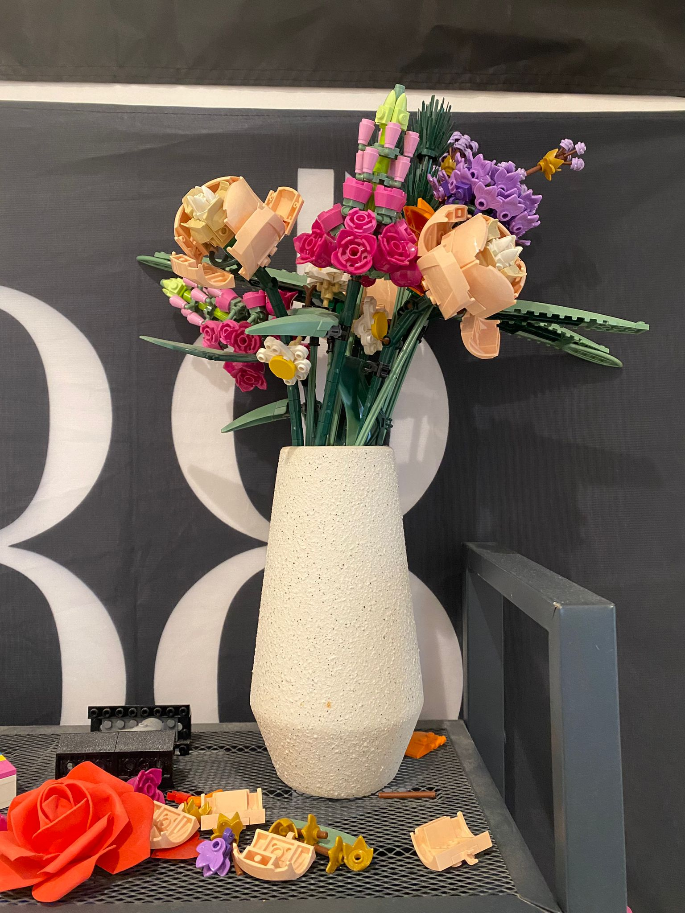
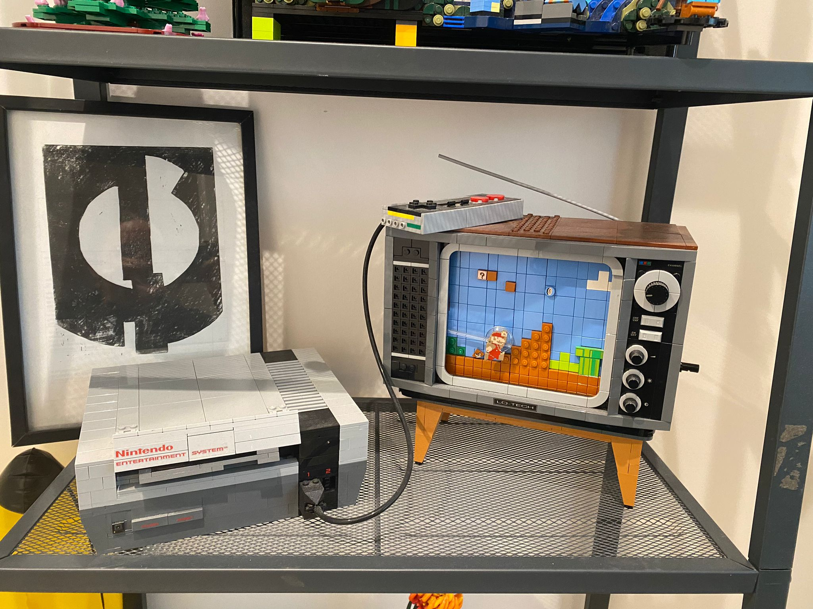
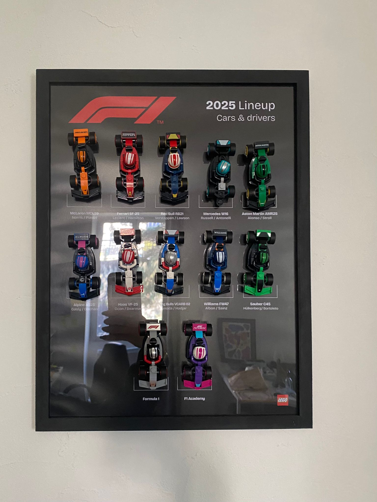
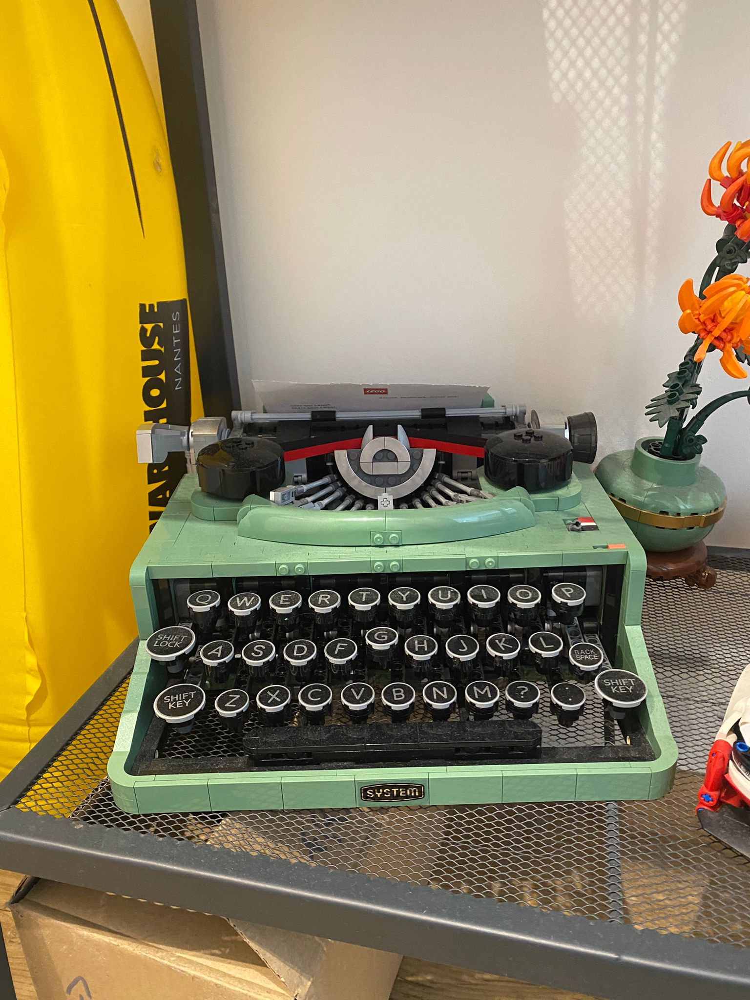
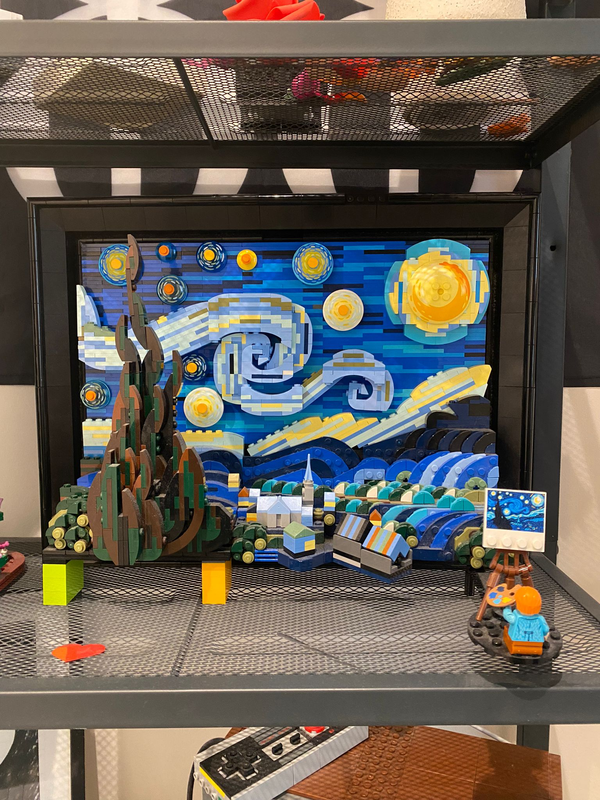

Bienvenue!
si vous etes ici c'est surement que vous etes des grands fan de lego!
Donc, installez-vous, lancez cette petite playlist :
et construisez votre set preferez!
Vous pouvez meme allez voir les prochains set legos
je vous donne aussi mon top 5 de mes sets
| 👑 | Mes Legos | Petits commentaires | Temps de montage |
|---|---|---|---|
| 1 |  | Trop belle et trop sympa à monter (plein de petites pièces techniques) |
~2h |
| 2 |  | J’adore le rendu final de la console Atari, la télé a un mécanisme qui lui permet de tourner le décor derrière Mario |
~7h |
| 3 |  | Ce sont des petites F1 à collectionner, le concept de collection était sympa |
~7min chacune |
| 4 |  | Elle était longue à monter et il y avait des petits mécanismes (que j’ai mal montés, oups !) |
~6h |
| 5 |  | Trop belle mais très fragile ! |
~8h |
|
Tous ces sets sont des coups de cœur en vrai ( j'en ai encore plein a construire.. ) |
|||